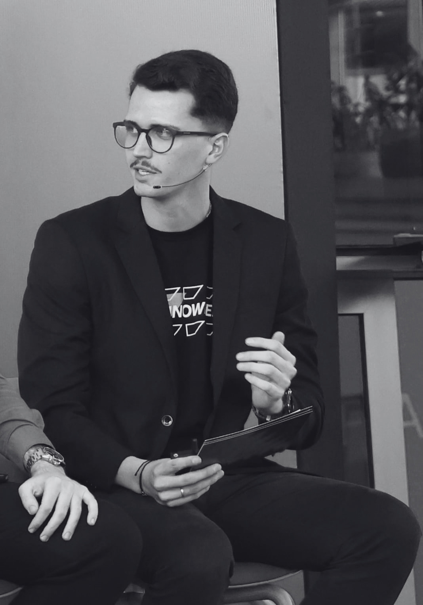

Using Classic Design Patterns to Build Scalable AI Systems
Read on Medium ↗Profile / 2026
Natan
Schons
Natan Schons is a Data Scientist at SAP building intelligent solutions for enterprise AI, specialising in RAG pipelines, LLM orchestration, and Knowledge Graphs.
Currently building obriefing.com.br.

01 / About
Engineering, AI & enterprise data.
Natan is a Data Scientist at SAP, working in the Language Experience Lab to evolve AI-powered translation solutions for SAP products across multiple languages globally. His path combines rigorous AI engineering with deep knowledge of the SAP ecosystem. Previously an Analytics Consultant at SAP, working with 30+ global clients on SAP Datasphere, SAP Analytics Cloud, and AI-powered analytics.
With 4+ years in IT, he works daily with LLMs, RAG pipelines, Knowledge Graphs, Ontologies, embeddings, and vector stores, integrated with SAP BTP and SAP AI Core. He contributes to strategic AI initiatives and state-of-the-art Prompt Engineering research within SAP. Fluent in Portuguese, English, German, and Spanish.
02 / Building
Explore
- 01 / Product oBriefing An AI-powered briefing platform built for the Brazilian market. Currently in active development.
- 02 / Code GitHub Personal projects spanning RAG systems, ML APIs, SQL pipelines, and applied AI experiments.
- 03 / Network LinkedIn Professional presence and career updates within the SAP and AI engineering ecosystem.
- 04 / Writing Medium Articles on Data Science, Machine Learning, and AI, written for engineers who care about the craft.
03 / Writing